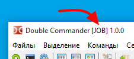

При запуске Double Commander мы можем указать некоторые параметры командной строки.
Например, мы можем указать каталоги, которые будут открыты в файловых панелях.
Также можно использовать некоторые переключатели.
Параметры НЕ чувствительны к регистру.
Синтаксис командной строки:
doublecmd.exe [-C] [-T] [-P L|R] [каталог1] [каталог2]
Возможна альтернативная форма:
doublecmd.exe [-C] [-T] [-P L|R] [-L каталог1] [-R каталог2]
Список возможных параметров запуска Double Commander.
| Параметры командной строки | |
|---|---|
| Параметр | Описание |
каталог1 [каталог2] (без переключателей, просто путь) |
Если передан один путь, то он будет открыт в активной панели. Если передано два пути, то первый будет открыт в левой панели, а второй — в правой. Имена каталогов, содержащие пробелы, должны быть заключены в двойные кавычки. Всегда указывайте полный путь. |
-C or --client | Если Double Commander уже запущен, этот параметр активизирует его и передаёт путь(и) из командной строки в эту копию программы. |
-L каталог | Устанавливает путь в левой панели. |
-R каталог | Устанавливает путь в правой панели. |
-P L|R | Устанавливает активную панель при запуске программы:
|
-T | Открывает переданный каталог(и) в новой вкладке(ах). |
--config-dir=каталог | Задаёт произвольный каталог с файлами конфигурации DC. |
--servername=x |
Задаёт имя экземпляра (сервера) DC, которое потом может быть использовано для передачи параметров. Если нет уже существующего экземпляра, то он будет создан. Если уже существует экземпляр, а текущий экземпляр является клиентом, то параметры будут отправлены серверу (т.е. уже существующему экземпляру). Если уже существует экземпляр и текущий экземпляр не является клиентом (т.е. опция Не запускать более одной копии DC не отмечена и нет параметра --client/-c), тогда имя сервера будет изменено: в первую очередь просто добавится число "2".Если какое-то число уже используется, то оно будет увеличено на 1, пока не будет найдено незанятое имя сервера. |
--no-splash | Запрещает заставку при запуске DC. |
--debug-log=файл |
Запуск Double Commander с выводом отладочных сообщений в указанный файл. Примечание: Также используемый модуль (LazLogger) поддерживает переменную окружения xxx_debuglog, где xxx — имя файла программы без расширения:
в данном случае это будет doublecmd_debuglog. Если эта переменная окружения существует, будет использоваться файл, указанный в её значении.
|
Примечание: Если вместо каталога указано полное имя файла, то Double Commander откроет папку и переместит курсор к этому файлу.
Несколько примеров использования параметров командной строки при запуске Double Commander.
Открыть каталог E:\Xilinx\ISE DS в левой панели и одновременно каталог C:\temp в правой:
doublecmd.exe "E:\Xilinx\ISE DS" C:\temp
Открыть каталог C:\Logs в новой вкладке активной панели уже запущенного экземпляра Double Commander:
doublecmd.exe -c -t C:\Logs
Запуск приложения с файлами конфигурации в каталоге F:\Documents\DC\Job Settings с упоминанием JOB в заголовке окна:
doublecmd.exe --config-dir="F:\Documents\DC\Job Settings" --servername="JOB"
